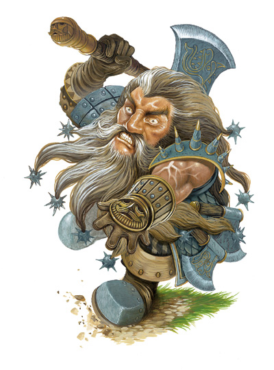

矮人战狂（又称「库扎尔夫」kuldjargh，意指「斧头笨蛋」）是极具传奇性的狂暴战士，他们可以藉由高声咏唱祭仪歌谣，让自己进入一种发狂般的战斗状 态。许多人相信这些狂战士都受过矮人族战神的祝福，并教导他们－如果他们死于战斗，就会得到公正的奖赏：他们将带着更强大的力量重返费伦大陆－因此他们对 死亡毫无惧意。他们时常喝得烂醉后东倒西歪地跳舞，并喧哗地高声唱歌。战狂在矮人社会中广受尊敬（也广受惧怕），他们是「先做再说」以及「如果它动了，就 干掉它」这类矮人哲学的最佳代表。他们绝大多数人的生命都既短暂又精采。
当进入狂暴状态时，战狂的五官会变得非常扭曲。他会龇牙咧嘴露出 尖牙，大量的唾沫也会从嘴中飞溅而出，滴落在自己的胡须上；而且睁目欲裂，双眼胀满血丝。他高声唱着自己氏族或神圣的战歌冲入战场，在用斧头劈开敌人之前 掷出所有随身携带的战锤与战斧。在很短时间之内他就会变成敌人难以处理的烫手山芋。战狂的全身上下通常覆满各种标志－从刺青、烙印、到仪式中所留下神圣疤 痕都有。他们喜欢穿着带刺的盔甲（有些还会骑着受过训练的野猪）冲入战场。
通常战狂们在兼职此一进阶职业之前都是单职的野蛮人，也有许多是战士/野蛮人。不过，也有一些野蛮人/游侠与野蛮人/牧师（被称作「辩论者」vindicator）会进阶成为战狂。除了上述组合之外，就几乎未曾听闻有其它职业的矮人成为战狂。
矮 人战狂在矮人社会与文化中占有特殊的一席之地。他们是既冲动又无畏的战士，具有疯狂作战的能力。许多矮人将领因而无情地利用战狂这种令人令人震惊的攻击特 性去扰乱敌人的阵脚。非玩家角色的战狂通常都是专出战狂之「优秀」家族的成员。这些家族通常会在矮人社会中组成独特的「工会」（guild）－虽然这种 「工会」其实比较像是家族之间的友好结社。无论如何，此类「工会」通常都会坐落于矮人社群的外围，以避免影响矮人儿童的成长－毕竟孩子们虽然常常听到种种 有关「库扎尔夫」的无畏传奇，但可不常听到有关这些人粗鲁愚蠢的另一面。虽然矮人文化对英雄般地战斗推崇赞扬倍致－战狂通常精于此道（毕竟他们的生命大多 耗费在狂暴战斗之上）－但绝大多数的矮人也明白他们不可能提供一个充满兽人与地精的世界给这些战斗狂人。
生命骰：d12
职业条件：
种族：矮人 Dwarf
阵营：任何非守序
基础攻击加值：+5
技能：胁迫8级 Intimidate，宗教知识2级 Knowledge（Religion），表演（歌唱）2级 Perform
专长：顺势斩 Cleave，坚忍 Endurance，威力攻击 Power Attack
特殊：拥有野蛮人的「狂暴」（rage）能力
职业技能：
以力量为关键属性者：攀爬 Climb，跳跃 Jump
以敏捷为关键属性者：特技 Tumble
以智力为关键属性者：手艺 Craft
以智能为关键属性者：聆听 Listen，野外求生 Wilderness Lore
以魅力为关键属性者：驯养动物 Handle Animal，胁迫 Intimidate，表演 Perform
每级技能点数：2+智力调整值
职业特性：
擅长武器与防具 Weapon & Armor Proficiency：
矮人战狂擅长使用所有的武器、盔甲、以及盾牌。
狂暴 Rage [特异能力]：
第1、3、5级起，矮人战狂将获得一次新的每日狂暴次数。如果他已经有「强力狂暴」（greater rage）的能力，则改为获得一次新的强力狂暴次数。
粗鲁 Gruff [特异能力]：
矮人战狂以其粗鲁、笨拙、粗暴闻名。第1级起，战狂的魅力属性检定，以及所有以魅力为关键属性的技能检定（除了胁迫之外，见后述）都有-4减值。不过他的胁迫技能检定反而会有+2加值。
抗毒韧性 Rock Gut [特异能力]：
矮人战狂的内在抗毒能力比一般的矮人强上许多。第1级起，他原本的种族抗毒+2加值将提升为+4。
贴身肉搏Close-Quarter Fighting [特异能力]：
第2级时，矮人战狂将得到「贴身肉搏」此一奖励专长。
--
附注：
贴身肉搏Close-Quarter Fighting [一般专长，战士专长]
描述：你擅于对付那些精于擒抱攻击的生物。
先决条件：基础攻击加值+3
效果：当你遭到拥有「精通擒抱」（Improved Grab）能力的生物击中时，你仍然可以发动机会攻击。此外，你可以将该次机会攻击所造成的伤害值，加到你对抗这次擒抱攻击的检定值上，以避免被对方擒抱。
举 例来说，当一只狂暴熊用爪抓攻击命中你时，如果你没有选取本专长，那么拥有「精通擒抱」能力的狂暴熊就可以立刻用实时动作发动擒抱攻击，而且不会引发机会 攻击。然而，如果你选取了本专长，那就可以针对该次擒抱攻击发动机会攻击－此外，如果你击中对方而且造成8点伤害，还可以将此数值加到对抗擒抱攻击的检定 值上，提高免受擒抱的机率。
正常：未选取本专长的生物，一旦被拥有「精通擒抱」能力的生物击中，则无法进行机会攻击。
--
无惧 Fearless [特异能力]：
第2级起，矮人战狂对「恐惧术」（Fear）与类似效果免疫。此外，当他抵抗影响心灵（mind-affecting）的法术与魔法效果时也有+2洞察加值。
精通徒手击打 Improved Unarmed Strike [特异能力]：
第3级起，矮人战狂将得到「精通徒手击打」奖励专长。
强力顺势斩 Great Cleave [特异能力]：
第4级起，矮人战狂将得到「强力顺势斩」奖励专长。
急躁攻势 Reckless Offensive [特异能力]：
第4级起，矮人战狂将得到「急躁攻势」奖励专长。
--
附注：
急躁攻势 Reckless Offensive [战士专长，一般专长]
描述：你可以放弃防御以发动更具威力的攻势。
效果：每当轮到你动作时，你可以「宣告」在此回合中让自己的防御等级降低4，而后在此回合中所有的「近战」攻击检定都有+2表现（competence）加值。该防御等级减值与近战攻击加值，都会持续到下回合轮到你动作时为止。当进行远程攻击时不得使用本专长。
--
天生防御 Natural Armor [特异能力]：
第5级起，由于矮人战狂身上的各种纵横疤痕与他纠结的肌肉硬块组成更佳的防御，因此他得到+2天生防御加值。
附表：矮人战狂
等级 基本攻击加值 强韧∕反射∕意志豁免加值 职业特性
1 +1 +2∕+0∕+0 狂暴（1天1次），粗鲁，抗毒韧性
2 +2 +3∕+0∕+0 贴身肉搏，无惧
3 +3 +3∕+1∕+1 狂暴（1天2次），精通徒手击打
4 +4 +4∕+1∕+1 强力顺势斩，急躁攻势
5 +5 +4∕+1∕+1 狂暴（1天3次），天生防御
--
资料来源：费伦大陆种族志《Races of Faerun》
译者：一凡